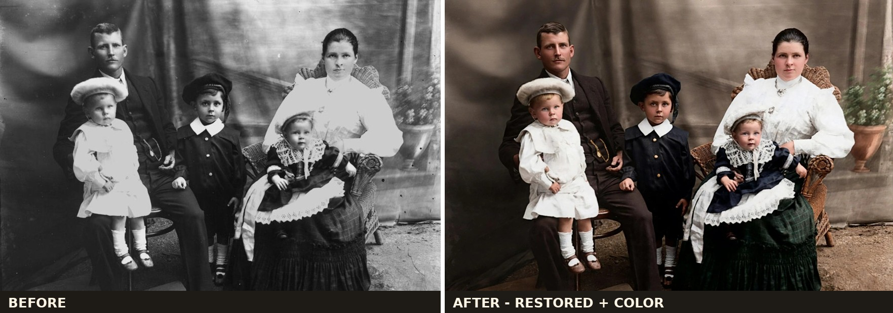
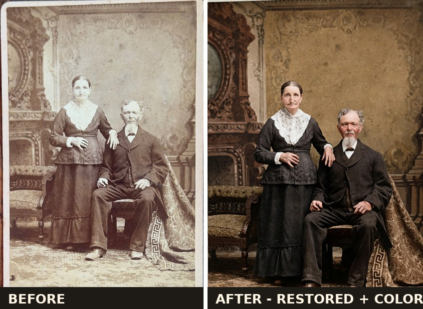
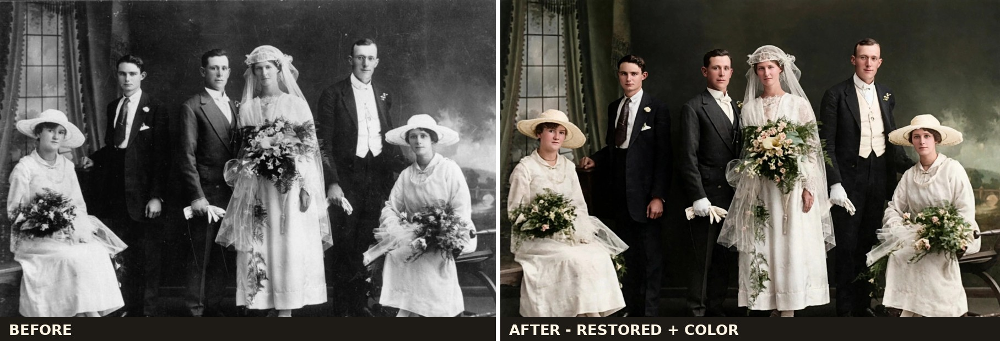
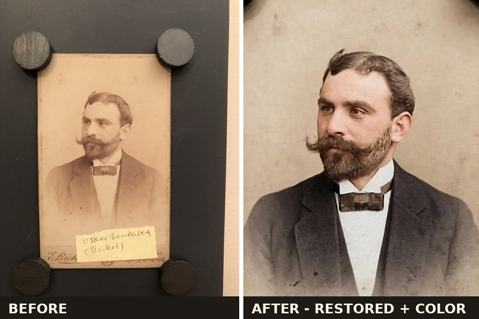
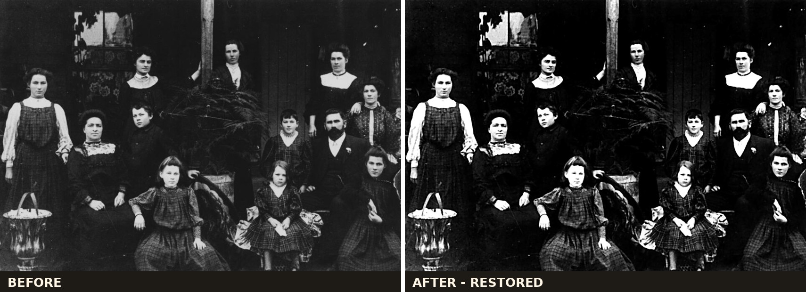
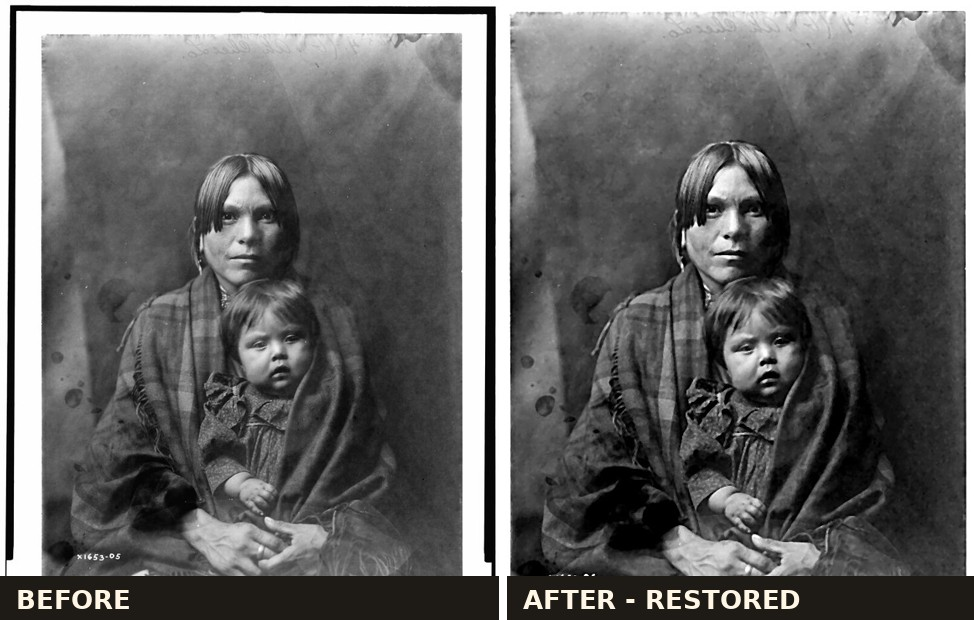

Old Photo Restoration & Colorization — your family photos, brought back to life

That faded, torn photograph of your parents or grandparents is one of a kind — and it is fading a little more every year. Send it to us — a scan, or even a photo of the photo taken with your phone — and we will carefully restore it, repair the damage, and, if you wish, bring it back in natural color. You receive a crisp, print-ready file you can frame, share with the whole family, or give as a gift.
Restore my photo — from $29Ready in 48–72 hours · You approve a watermarked preview before the final file is released · Secure payment by PayPal
Every sample below is a real historical photograph from a public archive, restored with the exact same process we will use on yours.





Fill in the short form below and attach your photo — a scan is best, but a straight, well-lit photo of the photo works too. Tell us how damaged it is and whether you want color.
We repair tears, spots, fading and scratches, recover the contrast, and colorize by hand-checked digital work when you ask for it. Within 48–72 hours you receive a watermarked preview to approve.
Happy with the preview? Pay securely with PayPal and we release the full-resolution, print-ready file — ready to print, frame and share. No surprises, no subscriptions.
Light damage: fading, dust, small spots, dull contrast. Cleaned, sharpened and balanced in black & white (or its original tone).
Medium damage: scratches, stains, creases, a torn corner or a very dark / washed-out image. Full repair in black & white.
Heavy damage plus colorization: everything in Standard, and your photo brought back in natural, era-true color.
Five photos restored together — the whole shoebox corner that matters most. Mix of Basic and Standard damage, color available on request.
Not sure which level your photo is? Send it with the form and choose “Not sure” — we will confirm the price before any work or payment. You never pay for a level you do not need.
A scan is ideal, but a photo of the photo taken with your phone is perfectly fine — just take it straight-on, in good light, without flash glare. We accept JPG and PNG files, and photos of any age, including tintypes and cabinet cards you photograph at home.
48–72 hours for most photos. Family Packs may take up to 5 days. We will always tell you the delivery time before you pay.
Securely, by PayPal. You first receive a watermarked preview; the final full-resolution file is released as soon as your PayPal payment goes through.
Your photo is used only to do your restoration. We never publish, sell or share client photos. All files — yours and our working copies — are deleted 30 days after delivery. The samples on this page are historical photographs from public archives, never client work.
Honestly: our process is AI-assisted and human-checked. Modern tools help remove damage and rebuild color; then every image is reviewed by eye against your original, because a grandmother's face must remain her face. If a detail cannot be recovered faithfully, we will tell you rather than invent it.
We deliver a print-ready digital file, sized for sharp printing up to a large framed size. Any local print shop — or an online printer — can turn it into a framed piece for a few dollars, which keeps your cost down and your photo safe at home.
Tell us what looks wrong and we will revise it once, free. If we still cannot make it right, you do not pay — the preview is free and carries no obligation.
Fill in this form and attach your photo. We reply by email with your confirmed price and delivery time — usually within a few hours.